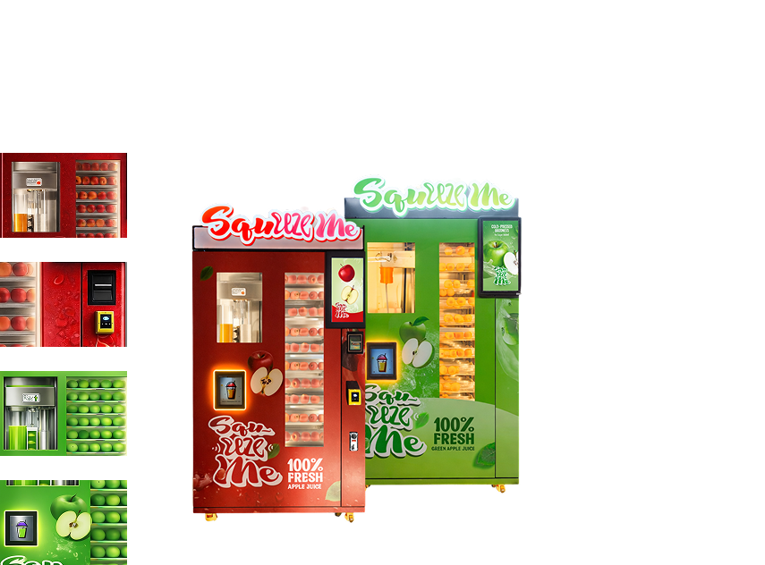

Offer fresh and healthy drinks with an on-demand apple juice machine
Apple juice vending machine
The Squeeze Me Apple Juice Vending Machine offers fresh red and green apple juice on demand. With a built-in slow juicer, the machine squeezes real apples and serves fresh, healthy apple juice in just 90 seconds.
Enhance your business with our on-demand apple juice vending machine and offer a convenient, healthy drink option that customers can enjoy any time of day.
-
Low Manpower Requirement
The machine operates automatically with minimal staff assistance, reducing labour costs while serving customers around the clock.
-
Strong Market Demand
Health-conscious consumers increasingly prefer fresh, natural beverages. On-demand apple juice meets growing demand in malls, schools, gyms, and offices.
-
24/7 Revenue Opportunity
Designed for commercial use, the machine can operate long hours and generate revenue 24/7 with minimal supervision.
-
Designed for High-Volume Usage
Built for busy high-traffic locations, our apple juice vending machine is engineered to handle consistent daily demand.
-
Squeeze-On-Demand Technology
Automatic juice vending machines squeeze fresh apples once the customer orders to offer fresh apple juice.
-
Slow Juicing System
Our fresh apple juice vending machine uses a slow juicer to maintain nutrients and enzymes by minimizing heat and oxidation.
-
Transparent Preparation Process
Customers can see the preparation process of making apple juice on the display, strengthening customer confidence and trust.
-
Cashless Payment System
A convenient cashless payment system is installed for a smooth and convenient purchase.

Business
Opportunities
Start your own venture
As people are choosing healthier drinks and becoming more health-conscious, fresh juice vending machines meet customer demand, offering healthy drinks. Squeeze Me Apple Juice Machine offers fresh apple juice that people need as a refreshment after their long days. Locations such as corporate offices, shopping centers, gyms, hospitals, and education centers are popular locations to place fresh fruit juice vending machines.
If you are starting a commercial apple juice machine business, partner with us and gain access to a tested concept and full support to initiate your business journey.
Frequently Asked Questions
Tap the screen, select your payment, and the machine will press fresh apples and serve your juice.
Yes, it's 100 percent pure apple juice made on the spot, with no added sugar, preservatives, or concentrate.
The machine accepts cashless payments for quick and easy transactions.
Simply repeat the process; each cycle is independent, so you can get as many cups as you like.
Staff regularly clean and refill the machine. You don't need to worry about hygiene; it's built to keep the juice fresh and safe.
Yes, the machine can be programmed to accept most currencies.
You get fresh, natural juice on demand, with no additives, and a healthier alternative to packaged drinks.
Our commercial apple juice vending machine uses a built-in slow juicer to squeeze apples in 90 seconds to offer fresh apple juice.
The machines are easy to maintain with a smart monitoring system. They are also designed for long-term commercial use and are able to produce a large quantity of juice in busy areas.
Yes, our apple juice vending machine is designed for commercial use and can serve a large number of users daily.
Absolutely. We use real apples to make fresh apple juice once the customer orders. There is no added sugar, preservatives, or concentrate to ensure it is fresh and organic.
When a customer orders apple juice, the apple juice maker squeezes real apples on the spot to serve fresh organic apple juice.
Yes, our Squeeze Me apple juice vending machine is very user-friendly. You just have to tap the screen to order, make payment, and collect your fresh apple juice!